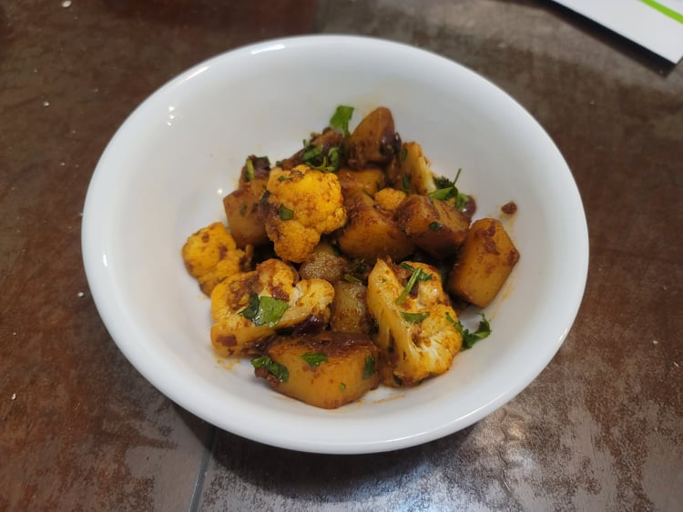

Aloo Gobi

Ingredients:
- 2 cups Potatoes, cubed into 3/4 inch cubes, about 2 potatoes
- 2 cups Cauliflower, chopped into 1 1/2 inch pieces, 180 grams
- 2 tbsp Canola oil
- 1/2 tsp Cumin seeds
- 1/2 tbsp Ginger, finely minced or grated
- 1/2 tbsp Garlic, finely minced or grated
- 1 Onion, diced
- Optional: 1 Green chili, slit
- 1/4 tsp Turmeric
- 3/4 tsp Ground coriander
- 1 tsp Kashmiri chili powder
- 1/2 tsp Salt
- 1 Tomato, finely diced, OR 1 tbsp Tomato paste
- 1 tsp Kasoori methi (Dried fenugreek leaves)
- 2 tbsp Cilantro, chopped
Instructions:
- After cutting the potatoes and cauliflower, rinse and place into separate bowls of warm water until ready to use.
- Place the oil and cumin seeds into a pan and begin to heat over medium. Once they start to sizzle, add in the garlic and ginger and sauté for 30 seconds.
- Add in the onion and sauté until translucent, about 5 minutes.
- Add in the potatoes and green chili if using. Stir fry for 2-3 minutes and then cover and reduce the heat to low. Let cook until the potatoes are halfway done cooking, stirring occasionally, about 3-5 minutes.
- Add in the cauliflower and raise the heat back to medium. Stir fry for 3 minutes. Stir in the turmeric, coriander, chili powder, and salt and then reduce the heat back to low. Cover and let cook until fork tender and fully cooked, 5-7 minutes.
- Add the tomato and dried fenugreek. Add more oil at this point if needed. Raise the heat to medium to high and cook for 2-4 minutes or until the tomato is cooked.
- Remove from the heat and toss in cilantro. Serve with rice or bread.